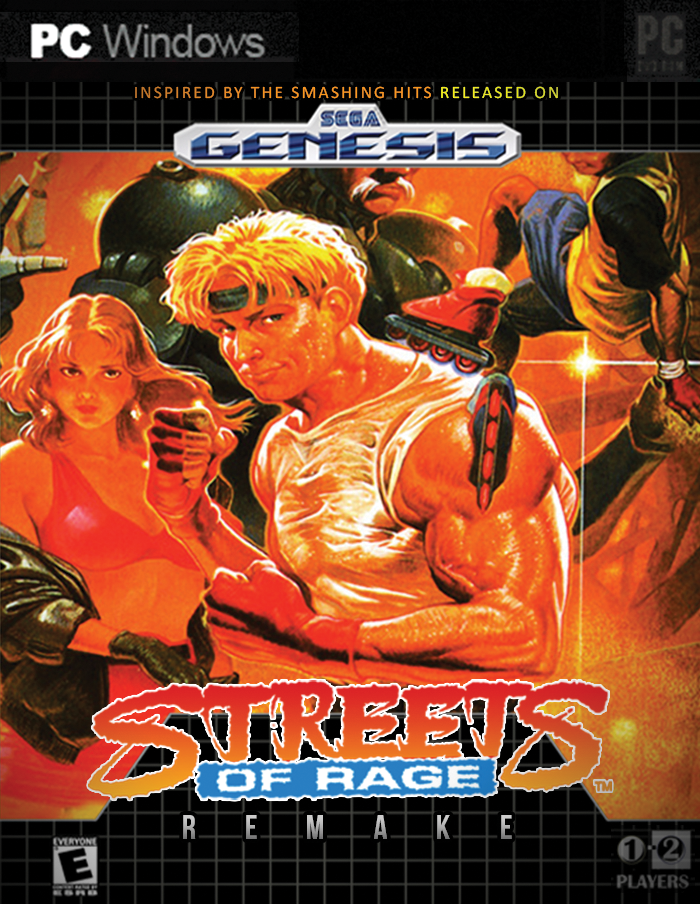

Streets of Rage 3
imagem do jogo Streets of Rage 3
Streets of Rage 3, conhecido no Japão como Bare Knuckle III (ベア・ナックルIII Bea Nakkuru Surī?), é um beat 'em up de rolagem lateral desenvolvido e publicado pela Sega em 1994 para o Mega Drive. É o terceira título da série Streets of Rage e o último jogo da trilogia original do Mega Drive. Mais tarde, foi lançado para a versão japonesa do Sonic Gems Collection para o Nintendo GameCube e PlayStation 2 e para o Virtual Console do Wii em setembro de 2007. O jogo também apareceu no Sonic's Ultimate Genesis Collection para Xbox 360 e PlayStation 3.
O jogo apresenta várias melhorias em relação ao Streets of Rage e Streets of Rage 2, como um enredo mais complexo, inclusão de diálogo com personagens, múltiplos finais, níveis mais longos, dificuldade maior, cenários mais detalhados e jogabilidade mais rápida. As armas agora só podiam ser usadas algumas vezes antes da quebrar e podiam ser integradas a movimentos únicos com certos personagens, os personagens ocultos foram adicionados e algumas cutscenes foram incluídas para dar maior profundidade à história.
Muito parecido com os dois jogos anteriores, Streets of Rage 3 é um beat 'em up de rolagem lateral, no qual até dois jogadores lutam contra ondas de inimigos. Os jogadores podem escolher entre os personagens Axel, Blaze e Skate, juntamente com um novo personagem chamado Dr. Zan, um robô que converte automaticamente todas as armas apanhadas em uma bola de energia. Ao cumprir certas condições, dois personagens bônus, Shiva e Roo, podem ser desbloqueados para o jogo, com um terceiro personagem desbloqueável, Ash, sendo exclusivo para a versão japonesa.
Vários ajustes foram feitos na jogabilidade após Streets of Rage 2. Considerando que apenas Skate era capaz de correr no jogo anterior, agora cada personagem é capaz de correr, além de executar um rolagem de esquiva vertical. Os ataques de blitz podem ser melhorados através de jogadas sucessivas, e um medidor recarregável permite que os jogadores realizem um ataque especial sem perder a saúde quando estiverem cheios. Certas armas agora têm ataques especiais que podem ser executados da mesma maneira que os ataques Blitz. No entanto, todas as armas agora têm um número limitado de uso antes de quebrarem, e os personagens desbloqueáveis não conseguem segurar armas.
As fases no jogo apresentam armadilhas, originalmente apresentadas no primeiro Streets of Rage, como poços sem fundo, e algumas fases têm rotas alternativas, dependendo de determinadas ações, como se os jogadores limparem uma sala com inimigos antes que um personagem não jogável seja morto por gás venenoso. A IA inimiga também foi expandida para que mais inimigos possam pegar em armas, bloquear ataques, empregar ataques cooperativos e até roubar itens de comida expostos para recuperar a saúde. O lançamento ocidental do jogo apresenta gráficos e efeitos sonoros alterados e maior dificuldade em comparação com a versão japonesa, e não apresenta Ash como um personagem jogável. Como no jogo anterior, o modo Battle permite que dois jogadores lutem entre si.
Depois de ser derrotado duas vezes, o chefe do sindicato do crime, Mr. X, fundou uma empresa de pesquisa chamada RoboCy Corporation para servir de cobertura para suas atividades ilegais. O melhor roboticista do mundo, Dr. Dahm, foi contratado para ajudá-lo a criar um exército de robôs realistas para substituir importantes autoridades da cidade. Com as substituições, X planeja administrar a cidade usando um dispositivo de controle remoto. Sua organização criminosa, O Sindicato, colocou estrategicamente bombas em toda a cidade para distrair a polícia enquanto as autoridades da cidade são tratadas.
Dr. Zan descobre para que serve realmente a pesquisa e sabe que o Sindicato deve ser interrompido. Ele entra em contato com Blaze Fielding com os detalhes do plano do Sindicato. Blaze rapidamente entra em contato com seus antigos amigos Axel Stone e Adam Hunter para uma força-tarefa para derrubar o Sindicato de uma vez por todas. Axel rapidamente se junta à força-tarefa, mas Adam não consegue (devido a suas próprias atribuições da polícia) e envia seu irmão mais novo, Eddie "Skate" Hunter. O jogo tem quatro finais, dependendo do nível de dificuldade e se o jogador terminar certos níveis em um período de tempo determinado.